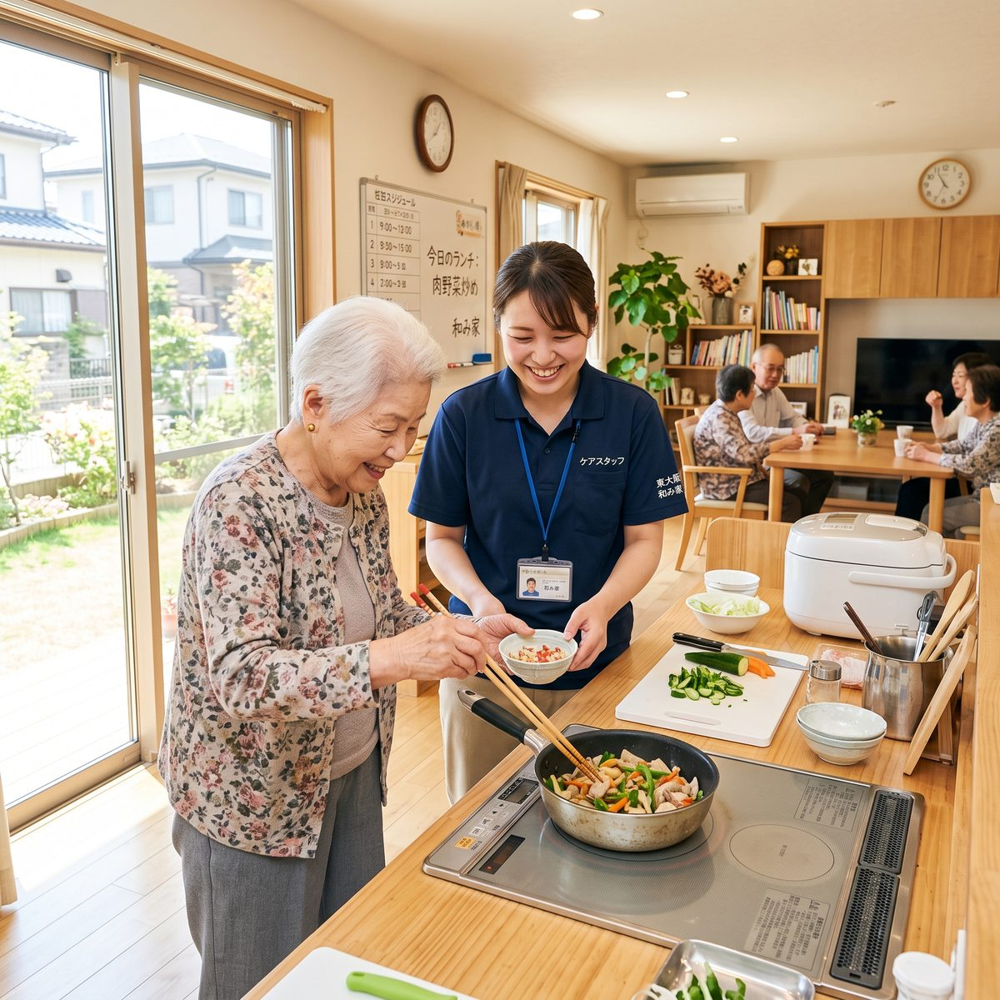
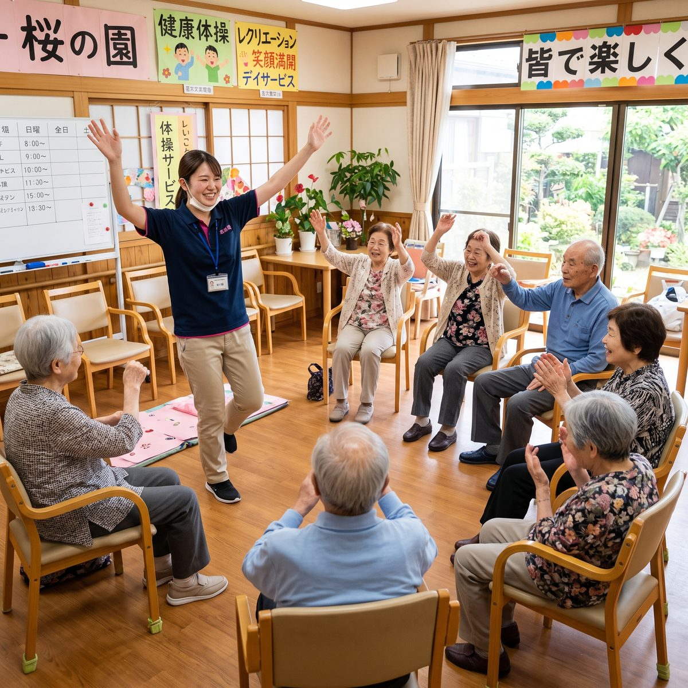
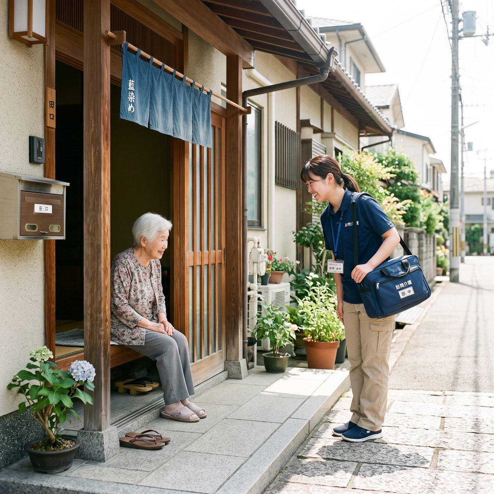

訪問介護のヘルパー→特別養護老人ホームの介護職員
夜勤の回数まで書いてある求人が多かったので、月4回までと決めて探せました。実際に入職してからも記載通りで、事前に思っていた働き方とのズレがなかったのが一番よかったです。
いまのあなたと近い状況だった方に伺いました。
夜勤の回数まで書いてある求人が多かったので、月4回までと決めて探せました。実際に入職してからも記載通りで、事前に思っていた働き方とのズレがなかったのが一番よかったです。
「1日の流れ」が載っている求人から選びました。送迎が朝と夕方にあること、休憩が交代で取れることが事前にわかっていたので、初日から戸惑いませんでした。会員登録なしですぐ応募できたのも助かりました。
キャリアアップのタイミングで、資格手当がいくらつくかを比較したくて使いました。給与の内訳が基本給・資格手当・処遇改善手当まで分かれて書いてあるので、額面だけでない比較ができました。
オンコールなしの施設看護師を探していました。夜間の医療対応をどうしているかまで書かれている求人は多くなかったので、そこが明記されている求人に絞って比較できたのは助かりました。
※本ページはデザイン提案用のデモです。掲載している声はすべて架空のサンプルであり、実在の人物のものではありません。
選ぶたびに件数が変わります。会員登録は不要です。
選んだ夜勤の条件はご利用中のブラウザに保存され、次にお越しいただいたときに引き継がれます。当サイトのサーバーには送信されません。
条件表では分からない部分を、施設に書いてもらいました。





夜勤の有無とあわせて選んでください。
特別養護老人ホーム
夜勤あり
要介護3以上の方が長期入所する公的施設。夜勤ありのシフト制が基本。
掲載求人 1,842件
介護老人保健施設
夜勤あり
在宅復帰を目指すリハビリ中心の施設。看護師・リハ職との連携が多い。
掲載求人 968件
有料老人ホーム
夜勤あり
民間運営の入居施設。施設ごとにサービス内容と給与水準の幅が大きい。
掲載求人 1,204件
サービス付き高齢者向け住宅
夜勤少なめ
自立度の高い方の住まい。生活支援と安否確認が中心で身体介護は比較的少ない。
掲載求人 756件
デイサービス・デイケア
夜勤なし
日帰り通所。送迎とレクリエーションが業務に含まれ、夜勤が基本的にない。
掲載求人 1,120件

訪問介護 夜勤なし 利用者の自宅を訪問して介護・生活援助を行う。直行直帰の事業所も多い。 掲載求人 634件勤務シフト・夜勤回数
8 / 8件の求人に掲載（100%）
月あたりの夜勤回数まで記載
給与の内訳
8 / 8件の求人に掲載（100%）
基本給・手当・賞与を分けて記載
1日の流れ
5 / 8件の求人に掲載（62%）
出勤から退勤までの時間割
働く人の声
6 / 8件の求人に掲載（75%）
在職中の職員のコメント
職員構成
8 / 8件の求人に掲載（100%）
職種ごとの人数・平均年齢
選考プロセス
8 / 8件の求人に掲載（100%）
応募から入職までの流れ
はい。トップページの「夜勤で選ぶ」、または求人一覧の「夜勤なし」「日勤のみ」条件で絞り込めます。デイサービス・訪問介護は基本的に夜勤がありません。
掲載施設に月あたりの夜勤回数の記入をお願いしており、記入がある求人は求人カードと詳細ページの「勤務シフト」欄に表示しています。
はい。夜勤のみを担当する働き方の求人も掲載しています。「夜勤専従」の条件で絞り込んでご確認ください。
掲載施設に任意でご記入いただいている項目のため、すべての求人にあるわけではありません。掲載がある求人はトップページの「1日の流れが載っている求人」からまとめてご覧いただけます。